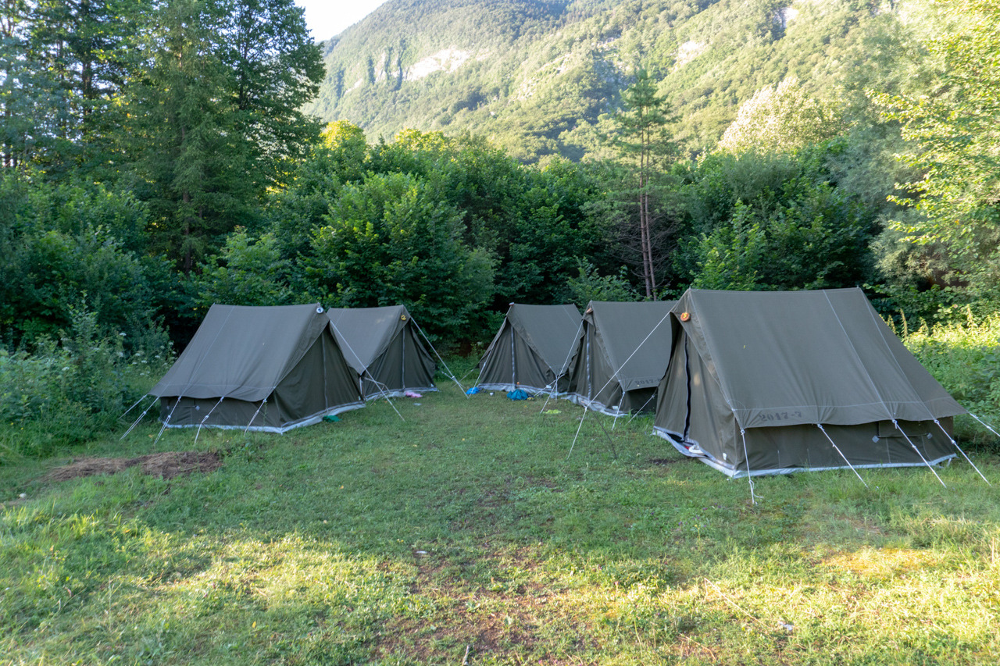

E - vo - nas, druga naloga. A veste savice? Tisti šotori k na taboru not spiš pa ti zamaka? Al ti ga pa veter odpihne?
No, to stvar bomo zdej nardil iz papirja. Yeeee. Navodila najdete na tejle strani. Pri delanju pazljivo štejte koliko prepogibov naredite, saj je prav to število geslo s katerim pridete do naslednje naloge.